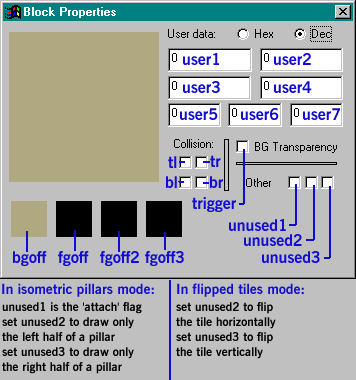

Index:
Welcome
Disclaimer
Features
Quickstart
How It Works
Using Mappy as a simple map editor
Important information about FMP1.0, Isometric/Hexagonal/other maps
Design Considerations
Shortcuts
The File Menu
The Map Editor Window
The Block Editor Window
The Edit Menu
The MapTools Menu
The Brushes Menu
The Layers Menu
The Playback Libraries
The FMP file format
The MAP file format
The mapwin.ini settings
Troubleshooting
Hints and Tips
Glossary
Version History
Thankyou for using Mappy, hopefully you will find it a
useful tool in creating your own games. This software is freely
distributable, and you may use it and the accompanying playback
libraries freely with no licence, the only restriction is that
you are not allowed to charge for this editor or the playback
libraries, or distribute a modified version of this editor
without the author's consent. You may, of course, use the
playback libraries and maps you create as you wish.
What is it? Well, I have tried to make the most
comprehensive and powerful 2D tile map editor about. The idea is
that you make some graphic 'tiles' of a set size (such as
32pixels wide by 32pixels high) with some paint package in such a
way as to be able to put them in a grid so they form a large
area. You can assign properties to these tiles so that maybe a
sprite (a graphic on the screen) can't go over certain tiles, or
maybe goes under one tile, but over another. You can also animate
tiles and lots more besides. If you don't find Mappy suitable for
your needs, or have suggestions for it, please email me about it.
There are several playback libraries available that
you can incorporate in your games which make display and
animation of the map easy. These playback libraries are available
from the Mappy site, and include MappyDX (for DirectX SDK C and
C++ programmers and CDX users), MappyAL (for Allegro programmers)
and many others.
Please take the time to look at this documentation
If you want to contact me, please email the address shown when
you select 'About' from the 'Help' menu or the address on the
Mappy homepage. The current Homepage for Mappy is: http://www.geocities.com/SiliconValley/Vista/7336/robmpy.htm
or http://www.rbsite.freeserve.co.uk/robmpy.htm
or if all else fails: http://surf.to/mappy
This software and associated files are provided 'as is'
with no warranty or guarantees of any kind, you use them at your
own risk and in doing so agree that the author is in no way
liable and cannot be held responsible for any loss of
time/data/hair or anything else that may occur either directly or
indirectly from the use of this software or associated files.
Sorry about that, but I don't think it's fair that I get
sued for something I release for free, just remember to keep
backups and you'll be fine. I have never lost any data or files
or had Mappy screw anything up, just be aware that if it does I
can't be held accountable :)
Note: These are the features for Mappy Win32 other platforms
and versions have slight differences in features, but all make
the same FMP files...
Single FMP file format (0.5) compatible with all versions of
Mappy and playback libraries
User definable MAP file format for compatibility with other systems
Supports 8/15/16/24/32bit colour modes
Supports all resolutions
Supports still and animated tiles
Supports tile sizes of 8*8 upto 128*128, including
non-square tiles
30000 tiles, AND 2048 anims available
Can edit maps with rectangular, isometric, hexagonal and other shape tiles
Easy to use interface
Fill (with still/animated blocks, brush (multi-block) and
random from brush)
Zoom (1x, 2x and 4x)
Hotkeys and keyboard shortcuts, inc pickblock and
next/prev tile
New, Cut, Copy and Paste
Brush an area, then draw with it!
Various playback libraries to use with your games to load
and display the FMP map file
All colourdepths converting (display 8bit maps on 16bit
screens? no problem)
Import and Export individual components
Resize map array with recentering (nice)
Undo (and Undo-undo :)
Grid, for easy positioning/tile recognition
Onion skin transparency
Tidyup/space functions, gets rid of unused data
Map information, see exactly how much space things are
using
DirectX preview (MappyWin32 will run without DirectX
except preview), scroll around your animated map on any valid
DirectX mode (all valid modes for your system are listed),
includes parallax layer for transparency checking. On my
relatively lowly 200Mhz K6 I can run my monitor rate of 75fps in
800*600*16 with all layers and parallax
Layers, 4 for each block, 8 in the map including
transparency and depth.
Expansive and useful documentation (surely the best
feature?)
I have not been able to get Mappy to run properly under
Win3.1 and Win32s and as I don't have this setup I can't really
do anything about it, sorry, though it works fine under 95, 98, Me, 2000
and NT. You will need your desktop in 15bit colour or higher
(high or true colour, the more colours the better). Double click
Mapwin.exe to start it. You will see Mappy open at the default
640*480, you can resize the windows as you like, also note you
can specify your own size on startup, see mapwin.ini
settings. If you just want to try out Mappy and aren't doing
anything serious yet, you'll find it pretty easy to use. Select
'Open' from the file menu, or simply press Ctrl+O, and open the MAPS
folder. You should see the file test.fmp (or 'test'), double click
it and it will be loaded into the map editor.
You should now see the map in the Map Editor (left)
window, and the still blocks in the Block Editor (right) window.
If you have a high resolution desktop and the tiles look a bit
small, select a 'Zoom' from the MapTools menu. Click the left mouse
button over a block in the Block Editor (right) window, you
should see a black and white rectangle appear round it,
indicating it is the active block. Now move the mouse over to the
Map Editor window and click the left mouse button to place the
block in the map. You can hold the left button down and move the
mouse to 'paint' with the block. Try scrolling
around the map with the cursor (arrow) keys, or using the sliders
at the right and bottom edges of the Map Editor window. You can
undo the last action you made by selecting Undo from the Edit
menu (or simply Ctrl+Z), you can undo your undo by selecting it
again. If you are having trouble seeing where tiles meet, select
Grid from the MapTools menu, blocks in the Block Editor window
will now have an outline, and the block the mouse pointer is over
will be highlighted in the Map Editor window.
One of Mappy's best features are animated blocks, to see
them click the right mouse button in the Block Editor window, you
should see the title of the window change, and any animated
blocks will be displayed, you can select and use them just like
still blocks, you can right click again to get back to the still
blocks. In a new project, there are no animated blocks to start
with, you should switch to the animated blocks window, and select
'New' from the Edit menu.
Handy shortcuts are to use the ',' and
'.' keys to select
the previous/next block and the 'p' key to select the block the
mouse pointer is currently over in the Map Editor window.
Although I'm not going to cover this in the quickstart, you can
double click the left button on a still or animated block in the
Block Editor window to edit it's properties, try it on both types
to see the options. You can use any of the options in the Edit
menu to manage the blocks, normally you would do this before
drawing the map area, although Mappy does try to be 'smart' in
minimizing unwanted alterations to the map.
Now let's try something a bit more advanced, select the first
'Brush' from the Brushes menu (you will see it has a tick, or check
mark next to it when you select it), then the Grab Brush option
from the same menu (Ctrl+B) now position your mouse over the
corner of the area you want to brush in the Map Editor window.
Click the left mouse button and hold it down and move the mouse
to the opposite corner of the area you want to grab, you should
see a 'bounding box' indicating the area. When you have the area
you want selected, release the left mouse button. You can now
paste that brush anywhere you like with the left button (the
brush will not be pasted if part of it would go off the edge of
the map) the top left of the brush will be at the mouse pointer.
Note that any 'block 0' blocks in the brush will be treated as
transparent so you can have non-rectangular brushes, unless you disable
this with the option in the Brushes menu. You can name the brush
if you want. You can also
use brushes for filling, find an area with a number of identical
blocks next to each other (the black areas are good), place the
mouse pointer over the 'starting block' and press the 'f' key,
that area will now be filled with the brush, over and over with
the top left of the brush where the mouse pointer is, try it and
see. Undo the fill with Ctrl+Z, now do the same, but press
Ctrl+F, the area will be filled with random blocks from the
brush.
You can try out the other features as you like (especially
the rather cool Anim Preview from the MapTools menu), when you
decide to do a map you want to use, please read the rest of this
documentation, it contains many more details such as design
considerations, layers and transparency. I'd really like to hear
what you thought of Mappy, please email me your comments, good or
bad, Robin Burrows
I have designed Mappy to hopefully be expandable,
produce small mapfiles with lots of features, and most
importantly be fast and easy to playback. The FMP format (how the
maps are stored) is a 'chunk' based format which allows all the
information for the map (graphics, array, anims, block data etc)
to be stored in a single file, you can also add your own chunks
to this file if you want, more details in FMP
file format.The playback libraries
then provide functions to load and play the map within your game.
MappyWin32 can now read and write custom MAP formats, see
Using Mappy as a simple map editor.
The map editor comes in several versions, this
documentation is concerned with the Win32 version. To make a FMP map
from scratch, you will need to make, or get some 'tile graphics'
(if you don't know what some of these terms mean, see the glossary) in uncompressed BMP format and
import them into a map (see next section). It is important to be
aware of the hierarchy of the objects within Mappy, you have the
top level which is the Map Array
(this is shown in the Map Editor window), the elements in that
are short int offsets to either Block
Structures if they are positive, or Anim
Structures if they are negative, Anim
Structures contain offsets to Block
Structures, Block Structures
have 4 offsets to the Graphics Blocks
(amongst other things).
MapArray ------> Block Structures --------> Graphics Blocks
......\............................/
........\Anim Structures/
That's about as much as you need to know if you don't intend adding your own objects, linked lists etc and are going to use the playback libraries.
Mappy is designed for creating and editing FMP maps, these have all
the features listed in the features section, and this
is the format supported by the playback libraries. However, sometimes you may
want to use a simpler format, and in Mappy this is MAP.
New in version 1.2 of MappyWin32 is the ability to edit
'simple' maps. These maps lose nearly all the features of FMP, but
you can use them without a playback library, often with the built-in
functions of other packages. These maps have the .MAP extension,
rather than .FMP, and only contain the width and height of the map array
(optional) and the map array itself in a format of your choosing. When editing
a MAP you should not use features of Mappy that can't be saved in a .MAP
(such as animated blocks, layers and block properties) as these will be lost
on exit. To configure the format of the .MAP files see the
MAP format section.
To create a new simple MAP, ensure you have set the correct format (see
mapwin.ini) and use New Map from the File menu. Next,
select Import from the File menu, and choose your BMP file with the blocks in,
answer 'Yes' to make new block structures. You can now edit the map. To save a
MAP rather than a FMP, simply select 'Save as' from the
File menu, but type the name to save with a .map extension, for example
level1.map you will be notified you are saving a MAP. That's it!
You can now use the 'Save' option to save your map with the same name. Please
note that if you have a negative adjustment when you save the map, any blocks
that would be made negative become 0, for example, with -1 adjustment, block 0
will not change on save, all others will become 1 less. On load, all become +1
so there will be no block 0. This may sound confusing, but really it just means
block 0 will become block 1 so don't be surprised when you reload the map (block
0 is not valid with -1 adjustment) try it and you'll see... If you want to avoid
such confusion, simply fill the map with block 1 at the start.
Using the .map format you can create files compatible with CDXMap, CDXIsoMap,
and many other custom formats.
To load a .MAP, simply select Open from the File menu and open it. For the
tiles, Mappy will try to load the mapdefBMP specified in mapwin.ini, if that
doesn't exist, it will try the map name with a .BMP extension (so
level1.map will try level1.bmp in the same folder),
if these don't exist it will ask you for a BMP file to use.
Most of the rest of this documentation is to do with FMP files, which have
much more advanced features, so if you are just doing a MAP they are not relevant.
The difference between this and the older FMP format is that this allows up to 30000 blocks, rather than 1024. Also, wherever a value was saved as a byte offset, it is now a 'unit' offset. The downside is you need a playback library that supports FMP1.0. You can freely change between FMP versions in MapTools>Map Properties as long as you have 1024 blocks or fewer.
This is a new feature added in version 1.3 of MappyWin32. If you are
making a map with non-rectangular tiles there are a few things you should be
aware of. Firstly, they are always drawn transparently (obviously), so if you use
block 0, this will leave trails when you scroll in Anim Preview or a playback library, so
it is best not to use block 0, fill the map with block 1 at the start. Next, you will need a playback
library that supports FMP1.0 (this should be clearly stated in the playback library),
even though you can save as FMP0.5. The 'clickmask' MUST be set in MapTools>Map Properties.
This should be the number of the graphic to detect transparent areas which allows the
editor to let you click tiles pixel-perfectly, normally 1 or 2. If you are editing a
.MAP rather than a .FMP, you should set the values correctly in
mapwin.ini for stagger and clickmask. The Block Parallax
functions are not supported. Non-rectangular tiles also take longer to draw.
As from version 1.3.1 Mappy now supports true isometric. This means that you can have
scenery that appears to rise out of the ground, and will be properly depth sorted
with both other scenery and sprites etc you may have in your game. In order to do
this, there is now a new mode which you must set by selecting MapTools:Riser mode.
To make a pillar you must first create a new block (Ctrl+N),
then select a BG graphic as usual, but the FG fields now work differently.
FG1 will overlay BG, FG2 will appear immediately above FG1, and the FG3 will
appear above FG2 (rather than overlaying it). What's that? It's not tall enough?
That's OK you can create a chain of blocks to stack on top of each other which
will be treated as just one pillar. To do this, simply check the left most of
the three 'other' boxes and the following block will be used to continue the
pillar. Any blocks which are attached will treat BG as an FG field. Attached blocks
will have a red border in the Blocks window (if Grid is on), indicating you
shouldn't use them directly.
Isometric can be quite tricky to do, so I'd recommend looking up some information
about it on the 'net. Not all block sizes tile properly, 64x31 with block gap
64x32 and block stagger 32x16 works well. I'll probably do a proper Mappy
Tutorial for Isometric at some point in the future...
Version 1.3.6 now allows you to draw the left or right half of pillars by checking
the 2nd (for left) or 3rd (for right) boxes of the 'Others' in block properties.
See iso_lr.fmp for an example, and iso_lr.bmp (in maps) to see the graphics I used.
This is common for isometric as it vastly reduces overlapping.
Also in 1.3.6 you can now specify a 'picklayer' in mapwin.ini
to allow easier picking of pillars (the blocks window is a bit confusing). Create
the picklayer just like a normal layer (in layers menu) and place your pillars on it.
Change back to your original layer, then just
press 'o' (the letter, not zero) to toggle between current layer and picklayer, move
mouse to base of pillar you want then press 'p', then 'o' again to return.
I added Isometric to MappyWin32 as it was requested and easy to do, however there
are a couple of things which may be worth noting, and if they are a problem, you
should perhaps try a different isometric editor. The first is that the isomaps
are stored staggered, rather than the more common and easier to use rotated diamond
shape maps which means pathfinding etc in games is trickier to implement. The
second is that the pillars are made out of block sized parts.
Before spending hours on a huge project it is important
to think about various aspects of it, what size are the tiles
going to be? What resolution(s) and colour depth(s) is the game
going to run in? What sort of view is it going to have (overhead,
side, oblique, isometric)? How are the other game objects going
to interact with the map? If you haven't done many tile based
games before, it may be best to do a very simple pacman or
shootemup project, just to get the hang of things, design is everything.
Colour depth and tile size cannot be changed easily once set,
(but see
hints and tips for a neat way to do this). I would recommend
that the width of the tile is a multiple of 4 (better memory
alignment), try 16pixels wide by 16pixels high for low res games
(320*240, 320*200) or 32*32pixels for 640*480 screen resolutions.
Remember that computers are advancing all the time, try to
support multiple colour depths and resolutions (if you think it's
worth it), also consider doing your map in 24bit colour even if
you are aiming for a 16bit screen, with an option to select any
high colour depth, MappyDX supports colour conversion, check the
docs for the other libs, of course, 24bit colour uses more disk
space than 16bit. If you are aiming for a lowspec machine with a
low resolution (such as VGA 320*200) use the Zoom option to get a
better idea of the graphic size in Mappy, also if you know you
aren't going to be able to access the video acceleration on the
videocard (for example using VESA under DOS) bear in mind there
will be a huge performance hit (the Anim Preview in MappyWin32
uses DirectDraw blitter acceleration found on almost all graphic
cards)...
The FMP file is ready to use from the first time you save
it, so it makes sense to develop your game code at the same time
as the map so you can see how things work and how fast they go,
also remember to adjust the preview setup in MappyWin32 to the
screen res. you are going to use...
When making your graphics for tiles, use a picturesize
that is a multiple of the tilesize, for example 32*32 and 16*16
tiles fit nicely on a 640*480 or 320*240 picture. To import them
into Mappy they will need to be lined up in a grid (export the
tiles from the example map as a BMP and load them into a paint
package to see how to do it, completely black tiles are ignored).
This is a list of shortcut keys, excluding those listed next
to items in the menus (see the menus for these):
f = fill area with current block/brush (from mousepointer)
ctrl+f = fill area with current brush randomly (from mousepointer)
o = toggle picklayer (isometric)
p = pick (select) current block/anim from under mouse pointer
, = (comma) select previous numbered block/anim
. = (fullstop) select next numbered block/anim
cursor keys = scroll map
This has the standard file features such as Open (open
a .FMP or .MAP mapfile for editing), Save (saves current .FMP or .MAP file under
it's current name, if it hasn't been named this is the same as
Save As), Save As (requests a name to save the map, .FMP will be
added if you don't type it in then saves it), Exit (quits Mappy,
same as clicking the cross gadget in the window titlebar, you
will be warned if you have modified a map but not saved it), and
some Mappy specfic ones, which are:
New Map. Brings up the new map dialogue where you choose
settings for the new map, you should have carefully decided on
the values you enter here (see Design
Considerations). Either the default values will be shown, or
the values for the currently loaded map (currently loaded map
will be cleared from memory if you OK from New Map), you can
modify these values to any legal value. You can change the colour depth by clicking the
displayed one and selecting a new one from the dropdown list.
Note: Your Windows desktop doesn't need to be in, or support,
that depth, your Windows desktop does need to be in high or true
colour though (yes, even for 8bit maps :). The only values that
can currently be changed after creating the map are the map width
and height via Resize. New for 1.3 are:
FMP version: this allows you to specify the version
of the FMP file, you can change it in Map Properties later on.
Block gap x and y: this is the gap between blocks, if x is the same width,
the blocks will be next to each other. For isometric maps,
gapx should be the same as blockwidth, and
gapy should be the same as blockheight.
Block stagger x and y: This is the offset for every other row, for
isometric, stagger x should be half blockwidth, stagger y should be half
blockheight. You can change all these in Map Properties later on if it doesn't look right.
When you 'OK' you will be given a map
filled with one block (shown in the Block Editor 'still' window)
this is a special block, you can edit it's properties (by double
clicking) but not give it any graphics or delete or move it from
the first position. Now may be a good time to check 'Map
Properties' in MapTools to see how much space is being taken up.
Import. This is used to get your tile graphics into your
map, at the moment it only supports uncompressed BMP files and any PCX file, if
you have an 8bit map you can only import 8bit BMP/PCX files (and the
colour palette will be taken from the most recently imported
one), in other depths you can import both 8 and 24bit
uncompressed BMP and any PCX files. There are plenty of conversion utilities
out there if you are using a different picture format. You can
import more than one BMP file, when you have selected the BMP
file to import, you will get the question: "Make all
imported graphics into NEW block structures?" If you answer
'Yes' new blocks will be created in the Block Editor 'still'
window that have each new graphic tile as the BG (see Block
Structures in the glossary), if you
answer 'No' you will be asked: "Replace existing
graphics?". Answering 'Yes' to that will write over the
current map graphics (except the special first one), the most
common reason to do that is when you have updated the map graphics.
If you say 'No' to replacing existing graphics the new ones will
be added to the map, but won't be visible until you incorporate
them into a Block Structure.
You can also import Map Array layers here, these MUST have been
previously exported from this map, and you must not have altered
the block order.
Export. You can export individual parts of the map as
separate files, which you may need for various reasons, though
the playback libs use the FMP files. There are five checkboxes,
click them to indicate you want to export that particular item
(they will be given the same name and be put in the same
directory as the map file, so if your map was called test.fmp,
the colour map would be exported as test.cma any file with that name will be overwritten!).
The colour map is exported as a 768 byte file containing
256*3byte values of 0xRRGGBB, this is the same as the CMAP chunk
of the FMP file. The Anim and Block data is exported as a long
int offset to the split between the anim and block structures
then the anim info, then the block structures. The map array is
simply an array of short ints mapwidth wide by mapheight high, so
a 100*100 map would produce a 20000byte .MAR. Block Graphics
(.GFX) are all the raw blockgraphics one after the other, so
that's blockwidth*(blockdepth/8)*blockheight*numblockgfx.Block
Graphics (.BMP) is a standard uncompressed BMP file in 8bit (if
the mapdepth is 8bit) or 24bit for any other depth, you can
specify how many blocks per row and this will affect the shape of
the BMP file, this is useful for modifying the graphics, then
re-importing them.
This will show how the map is layed out, and allow you
to edit that layout. Simply select a block, anim, or brush and
paint with it by clicking the left mouse button on the square
where you want to place the tile, you can alter more than one
square by holding down the left mouse button and moving the
mouse. You can fill an area of blocks with either a still
block, anim block or brush (depending on what is currently
selected as your drawing item) by pressing the 'f' key (make sure
caps lock isn't on) when the mouse button is over the block you
want to start the fill with. You can also fill randomly from a
brush with Ctrl+F, you can weight blocks by having more than one
in a brush (try and see, you can undo a fill with Undo, Ctrl+Z).
Another handy shortcut is to press the 'p' key while the mouse
pointer is over the block you want to pick in the Map Editor
window, this will now be your current block/anim. You can select
the next/previous block/anim by pressing the ',' and '.' keys.
You can move the area seen in the Map Editor window by
either using the scrollbars on the right and bottom edges of that
window, or by pressing the arrow (cursor) keys, hold them down to
scroll along. When you get to the right or bottom edges of the
map you will see a grey area which cannot be modified.
Information about the block under the mouse pointer is
given in the window title bar, T=1 means BG transparency is set
for that block.
This shows all the still and animated blocks that have
been created, you can toggle between the still and animated
screens by right clicking the mouse over the Block Editor window.
To select a block or anim, left click the mouse button on it, you
can now draw with it in the Map Editor window. Remember to turn
the grid on (Ctrl+G) if you have trouble telling where the block
boundaries are, though grid only works on maps with rectangular tiles.
You can add a new block/anim, cut copy and paste
(all in the Edit menu), new and paste put the block after the
currently selected one. Note that cutting a block will remove any
references to it from the map array (they will be replaced with a
reference to block 0), and pasting it will not put them back, so
it's usually best not to cut blocks you are using in the map
array. Also note that cutting a block does not remove the
graphics it was using. Undo does not work when editing the Block
Editor.
You can see more blocks/anims by scrolling up and down
with the scrollbar on the right of the Block Editor window.
To edit a block structure, double click it in the Block
Editor window. Depending on whether it is a still or animated
block, you will be shown a dialogue giving details about it and
allowing you to change it.
Editing Properties of a Still Block. You will be shown the
block you double clicked, along with it's properties. The numeric
information is not used by Mappy and is entirely for your own
use, as are the four collision detection, and 'other' bits. The BG transparency
box indicates whether BG transparency is taken into
account (you will nearly always check that in block 0 if you plan
to use transparency, as well as any blocks that have a
transparent colour in the BG graphic). In the bottom left, you will see the
four layers of graphics that make up the block's appearance,
simply click them to pick a new graphic, BG is used as the back
layer, you will probably only want to use the first FG layer,
this allows you to draw the map in layers in the playback
libraries, sandwiching sprites between them to give depth. You
can go to the next/previous block by clicking the arrows next to
the OK button.

This contains New, Cut, Copy and Paste for use with the
blocks in the Block Editor window (see
Block Editor for how those work).
Resize, which allows
you to resize the map array of all layers. Before resizing it is
advisable to save the map as you can't Undo it (though you can
resize back to the original size). The Resize dialogue shows 9
buttons on the left which show which edges rows and columns will
be removed/added to, be sure that the Map Centering text at the
top shows the correct number (the default is 5, rows and columns
will be added/removed equally from all sides to make the new size
map). If you select centering as '1' (top left), columns will be
added/removed from the right and bottom edges. Select the new
size by entering the numbers in the width and height boxes, then
OK to resize, or Cancel to keep the old size.
Undo is very useful, but doesn't work on everything, it
will undo everything since the last left mouse click in the Map
Editor window (including the area you can't see), especially
useful for undoing Fill or when you 'paint' by holding the
mousebutton down.
There are all sorts of goodies in here, the first is
Map Properties. This allows you to put your name and a 3 line
description of the map, the length of each line is limited to 68
characters, this information is saved in the FMP file. Below is
how much memory each type of object is using in the map along
with the total space used for those objects. There are also a
variety of things you can fiddle with. The Alt Graphics: Load allows
you to add another set of graphics to support an 8bit display, if
Anim Preview is set to an 8bit mode, you can see them there... If you import
graphics, these will be freed. To make them: export tiles as a BMP, convert
to 8 bit, Load 8bit BMP as Alt graphics.
A clickmask MUST be set for non-rectangular tile maps (like isometric)
you should set this to a number of a graphic tile that is a solid mask
for the shape of blocks. Don't cache in VRAM allows you to stop a
playback lib using VRAM for certain graphics (like marker blocks), example:
1-20,28,30,35-40 would not load blocks 1 through 20, 28, 30, and 35 through
40 in VRAM, using sysmem instead. This feature requires a playback lib that supports it.
There are then two options for previewing the map in
DirectX, you must have DirectX3 or greater installed to use this.
First, choose Preview Setup. Select the screenmode you want to
use from the list, these are reported by DirectX so only valid
ones are shown, it defaults to whatever you set as apmode in
mapwin.ini, bpp is the depth of the map
pick whichever you like,
preferably the one your game is going to run in, beware that
running excessively high resolution modes on monitors not
designed for that mode may damage the monitor. Check the boxes
below for which block layers are drawn (the default is background
(BG) with the first foreground layer). Below are the transparency
options, check the box to enable transparency on the preview, if
you want a parallax layer (very handy for checking proper
transparency) enter the number of the GRAPHIC (this may not be
the same as the block number, 0 will be plain black or colour 0,
you can see what the graphic numbers are by editing a still
block, clicking on the BG image and looking at the list) this
will be repeated over and over in any transparent regions
(remember to check the BG transparency box, in the Block properties
editor) and move at half the speed
of the other layers creating a rather lovely effect. There is also a box
specifying the logic rate, leave this at 0 if you want the logic
to match the monitor refresh rate, or specify your own. If you are
making a game you usually can't rely on the refresh rate of the
monitor to regulate speed as it varies (so speed will vary on
different machines). Most games update internally at a set rate
(try 100fps) which unfortunately leads to jerkier movement but
at least the speed is the same on all machines. Anim Preview allows you to
scroll around the map (starting at the point where the Map Editor
window is currently viewing) and see the animated blocks, er,
animating as well as the transparency.
Range Edit Blocks allows you to selectively adjust a set
range of block structures. This is particularly useful for
making blocks foreground/transparency blocks. It is simple to
use, type the numbers for the start and end of the range of blocks
you want to alter, then adjust ONLY the things you want to change.
If any of the checkboxes are greyed out, or the user fields are
completely blank the information in each block will be left
unaltered. For more information on these fields, see
Block Editor.
The Remove unwanted options are handy when you have
completed a map and want to reduce it's size. Make sure you have
a backup! If you select remove anims, any anims that aren't used
in the map will be removed, this probably won't save much space
on its own, but when you remove graphics you could save a lot
more, be careful, if you have made an anim sequence that is
inserted into the map in realtime by your game, it will still be
deleted if it is not in the map. Remove blocks removes any block
structures not used by the map array or anim sequences. Remove
graphics removes any raw graphics not used by block structures,
this will make the biggest saving if you do these processes in
the order just described. To check these savings, view Map
Information before and after doing this.
Grid and Zoom have already been described in other
sections. When Grid is checked, blocks in the Block Editor window
have an edge round them, and the block under the mouse pointer is
highlighted in the Map Editor window. Zoom shows things at normal
size when Zoom x 1, twice normal at Zoom x 2, and four times
normal size at Zoom x 4.
Brushes don't work very well in non-rectangular tile maps.
Often you will have 'objects' that consist of several
blocks, maybe a house or road or something, there is an easy way
to put these in. First, put the blocks in the Map Editor as they
are supposed to be layed out, then select a brush from the
Brushes menu (it will then have a checkmark next to it), and
select Grab Brush or press Ctrl+B, move the mouse pointer over
one corner of the object you want to pick up as a brush, then
hold down the left mouse button and move the mouse pointer to the
opposite corner, you will see a bounding box as you do this.
Release the left mouse button to finish picking the brush. You can
name/rename a brush at any time by selecting Rename Current Brush. Now
you will be able to paste the whole object anywhere on the map
with a single click, the block the mouse pointer is over will be
the top left block of the brush you are pasting. You can reselect
the brush at any time by selecting it from the Brushes menu, they
are also saved with the map so you can use them when you load it
next time. You can Fill with a brush as
well, either tiling, or randomly, see Map Editor
Window. If you want to save a bit of space (and it will be a
very small amount) choose the Destroy All Brushes option.
Grab brush from block sequence allows you to make a brush
from consecutive block structures without having to get them
from the map.
Disabling the brush transparency means that block 0 parts
of the brush will overwrite when pasted rather than not
affecting the map.
There are two different layer systems in Mappy, one is
Block Layers, which are the four layers associated with Block
Structures, the other is Map Layers, which is what this menu
manipulates. Map Layers are identical in size and shape to the
numbers you specified in New Map's map width and map height. The
idea is you can use a layer for games objects (like pickup items)
or perhaps changes in a level when a lever is pulled in the game.
The options in this menu are fairly self explanatory. If you just
want to do a load of levels for a game with the same graphics and
blocks, you can export the map array (the current layer) and this
will be much smaller than a whole .FMP file. The 'slide layer'
option will slide only the current layer, and you can use 'undo'
afterwards if you make a mistake.
Note you can export and import layers as .MAR files, but
the map you are working on MUST have identical blocks and be the
same size. This is handy if you are doing a 100 level game as
Mappy only handles 8 layers internally.
The onion skin option allows you to see transparently
through a layer to one other selected layer. This feature is not
available for non-rectangular maps. It's best to keep this
feature off if you aren't using it. The current layer (ie the one
which has the tick next to it in the layers menu) is the top
layer which will be the one altered. The background layer is
selectable in the Onion Skin dialogue and will be shown behind
the current layer, you can optionally make this appear darker so
the current layer stands out more. The background layer is drawn
as a guide and will not be altered when you are editing the
current layer. Remember to switch it off when you've finished,
and selecting a layer that doesn't exist for the background is
not advisable :) Loading a map will switch off onion skin.
A large part of Mappy are the playback libraries, these allow you to easily load, manipulate, display, animate and scroll maps help in .FMP files with a few simple function calls. You can get these from the Mappy Homepage, all source is supplied so you can modify them as you like. At the time of writing, there are MappyDX, for C++ compilers with the DirectX SDK, this editor uses a modified version for its Anim Preview, MappyAL (older versions were called MappyPB), MappyJV, MappyGL, CDXMappy and SDLMappy. You do not have to use these libraries, you could write your own, but they are very convenient.
The playback libraries are also an excellent way to add more abilities to the editor. For example, you could build a sprite editor with them for your game.
This is technical information about the FMP file structure.
You do not need to know this if you are using the playback libraries
The first 12 bytes are as follows:
4bytes ASCII = 'FORM'
long int = size of file less header (which is filesize-8)
4bytes ASCII = 'FMAP'
NOTE: The chunk size long ints like the one above are stored in Motorola
format, NOT Intel. You will have to byteswap to get the correct value, ie:
Bytes 1,2,3,4 need to become 4,3,2,1.
The chunks in the file follow on one after the other, and consist of an 8byte
header, and the information specific to that chunk. See how the playback source reads
in the information. The chunks can be in any order, and some chunks may not
be used in a particular file. Also, don't rely on chunks being a certain size, for
example the MPHD is now 4 bytes bigger than in the last version
Chunk header:
4bytes ASCII = ChunkID (example: 'MPHD')
long int = size of chunk data less header
These are the chunks as of V1.2:
ATHR - Up to 4 ASCII strings of author information, separated by 0 values,
always an even size.
MPHD - Map header, see struct in mappy.c
EDHD - Editor information, see struct in mappy.c
CMAP - Colour palette for 8bit maps, red byte, green byte, blue byte for
however many colours are needed (so usually 256*3 bytes).
BKDT - Block data. Contains BLKSTR structures for however many block
structures were made.
ANDT - Animation data. Contains ANISTR structures for however many
animation structures were made, and also animation data.
BGFX - The raw graphics in whatever format the map is in. Examples: 8bit:
mapwidth*mapheight bytes per block, in forward format *numblocks
16bit: mapwidth*mapheight*2 bytes per block, each word contains
5 bits red, 6 bits green, 5 bits blue.
BODY - An array of short ints containing positive offsets into BKDT, and
negative offsets into ANDT.
LYR? - Where ? is an ASCII number form 1 to 7. These are the same size and
format as BODY, and allow object layers to be used.
You can add your own chunks to a map file, if you load it into mappy,
when you save it, those additional chunks will be saved in the file, but
not necessarily in the same place as before.
FMP1.0 notes:
This is very similar, but the values in all the chunks refer to units rather than bytes,
ie. in BODY 0,32,64,96 would be 0,1,2,3 in FMP1.0.
MAP is a user definable format which you can use for basic maps. To
define the format you need to change the maptype line in the
mapwin.ini file to how you want it. The values are between the quotes and the
default: "LW4H4A4-1" is the usual format for CDX maps. What is this
cryptic rubbish? The first letter is either L or M and specifies the endianness
of the MAP file, for Intel this is L, for Motorola M. The next parts are letters
followed by numbers, currently you can have:
W = Width of map in blocks, the next number is size of this field in bytes
H = Height of map in blocks, the next number is size of this field in bytes
A = map array, the next number is size of each cell in bytes, the number after
that is the adjuster, if the blocks look wrong, you can adjust them up or down
to match them up, -1 normally compensates. The array is stored in plain number=block
form.
So, for example, if I ONLY wanted the map array in bytes I might use
"LA1-1". This means L=Intel format, A1-1=Array 1 byte per cell,
with -1 adjustment. If I wanted to be strange I could have "MW2W4H4H2A20"
which is M=Motorola format, W2=Width as 16bit, W4=Width as 32bit, H4=Height as 32bit,
H2=Height as 16bit, A20=Array 16bits per cell, 0 adjustment.
It is very important to set the other 'map' values correctly in the
mapwin.ini file.
The mapwin.ini file is in the same folder as the mapwin.exe file (the
MappyWin32 map editor). Use Notepad or another plain text editor
to change the values to your settings then save. You must restart MappyWin32 to
use the new settings (not the whole computer, just Mappy). These are the current
settings:
Width and height are the starting size of the Mappy window, usually you'll want
to change these to the size of your desktop
width = 640
height = 480
Start editor with grid on (value 1) or off (value 0)
grid = 1
Start editor with x1 zoom (2 = x2, 4 = x4)
zoom = 1
Layer number for toggling with 'o' key
picklayer = 1
Starting colourkey value for 15, 16, 24 and 32bit maps
transred = 255
transgreen = 0
transblue = 255
Starting colourkey index for 8bit maps
trans8bit = 0
Default setting for Anim Preview
apmode = "640*480 8bpp ?hz"
You will probably want importskip = 0 when working with MAP files! When it is 1 it ignores completely black blocks in the BMP file
importskip = 1
Below is the adjustment made when exporting a CSV (comma separated value) file
csvadjust = -1
See MAP file format for detailed description of maptype
maptype = "LW4H4A4-1"
It is vital to set mapdefw to the width of your map (in blocks) when working with MAP files which DON'T contain map width (W)
mapdefw = 100
It is vital to set mapdefh to the height of your map (in blocks) when working with MAP files which DON'T contain map height (H)
mapdefh = 100
It is vital to set mapdefbw to the width of your tiles (in pixels) when working with MAP files
mapdefbw = 32
It is vital to set mapdefbh to the height of your tiles (in pixels) when working with MAP files
mapdefbh = 32
It is useful to set mapstaggerx to the odd row offset (in pixels) when working with Isometric MAP files
mapstaggerx = 0
It is useful to set mapstaggery to the odd column offset (in pixels) when working with Isometric MAP files
mapstaggery = 0
It is useful to set mapclickmask to the block for the mask when working with Isometric MAP files
mapclickmask = 0
If you want to, set this to your tiles bitmap for MAP files, see
Using Mappy as a simple map editor
mapdefBMP = "nodefault.bmp"
The map editor always starts in 640*480 and it's a pain to
resize the windows every time. See the mapwin.ini
section.
You import more graphics, but the colours change and
appear wrong in 8bit. This is due to using different colour
palettes.
You have a high/true colour map, but the transparency colour
isn't transparent. Change the colourkey in Map Properties to the correct
colour, also see the warning in Block Editor.
Mappy appears to be working, but no graphics appear
anywhere. I noticed this on Win3.1 with Win32s, don't know why,
if it happens to you email me about it.
Something appears to be wrong with the FMP file you made.
email it to me and I'll take a look.
Transparency doesn't seem to work in the Anim Preview.
Make sure you have the transparency box checked and the correct
index/colour value is shown, also make sure blocks with
transparent BG colours has the BG transparency box
checked under Block Properties.
The anim preview seems jerky/slow. This could be due to
a number of things, poor DirectX drivers for your card, some
windows background application hogging your CPU time or just
trying to do too much. The preview is just that, it's to give
a rough idea of how the map will look. It is worth noting that
the example map, test.fmp, uses 16*16 blocks which are fairly
inefficient for 640*480 or higher resolutions, 32*32 block
maps should give much better results in 640*480.
You can't use the exported files in the playback libs,
only the FMP ones, if you want to use exported components you'll
have to write some additional functions (except for .MAR).
The colours look all wrong in the Anim Preview. Try not to
display high colour maps on an 8bit screen, you can do it in the
playback libs, but no palette is set in Anim Preview.
Edit the file called MAPWIN.INI that's in the same
directory as Mappy with NotePad. Change the numbers to suit. see
mapwin.ini settings.
If you want to change the graphics tiles in a .FMP (either
the size or colour depth) a smart way of doing this is to export
your map layer(s) as .MAR files, then make a new map with the new
settings, and arrange the block structures into the same order
as the old map, then import the old .MAR files.
If you associate file of type .FMP with mapwin.exe, you
can just double click them to start (right click, 'open with'...).
Don't have absolutely huge maps, a 1000*1000 block map
with tiles of 32*32 pixels is stupidly big, and uses 2Mb of
memory for each Map Layer, plus it will take forever for you to
make it :)
Please read the documentation, see how big it is? It's not
all waffle. In particular read the Design
Considerations part.
Please let me know about your projects you are making with
Mappy, I'm interested to see how it is used. Also, any bugs are
only likely to get fixed if they are reported, so don't keep them
to yourself, email me.
Hmmm, need some more tips really, want to add some?
Anim Structure a 16 byte structure and
associated list of frames (Block Structure offsets) of unknown
length
Block I have tried to make 'block' mean
the block structures for this documentation
Block Editor The window that allows you
to select and edit both still and animated blocks. Right clicking
the mouse on it toggles between still/animated
Block Structure a 32 bytes structure
that acts as information about a particular block, it is
referenced by the Map Array and Anim Structures, and in turn
references the raw Tile Graphics
BMP Standard Windows graphic file format,
MappyWin32 only imports and exports 8bit and 24bit uncompressed
versions (Other colour depths are imported/exported as 24bit)
currently
FMP Flexible MaP format, a collection of
all the information needed to render and animate a map for a
game.
MAP MAP format, a very basic user defined
format for compatibility with other systems
Graphics Blocks See 'Tile'
Map Array an array of short int (16bit)
values that reference Block Structures (when positive) and
Anim Structures (when negative). There can be up to 8 layers of
this array by using the Map Layers
Map Editor The window where you fill in
the map array using the various tools provided
Map Layers There can be up to 8 layers of
the map array for objects, ingame changes, etc. Normally you
would only have 1 or 2 layers. These can be selected and changed
in the Playback Libraries
Mappy A 2D tile map editor with lots of
features, this is the Win32 version but there is also a DOS and
WinAllegro version
Playback Library these are available
separately for free at the Mappy homepage, there are several
versions for different platforms, they provide an easy way to
access the map in your game
Tile I have tried to make 'tile' mean the
raw graphics the block structures use for this documentation
Tile Graphics All the graphics
information for the map
1.3
Fixed some bugs in the .MAP loader
Transparent BG colour is now drawn as black (not 8bit)
Support for Isometric/Hexagonal/other shaped tiles
Fixed wrong colour 'DirectX feature' in 8bit Anim Preview
You can add an alternate 8bit graphics set to 15/16/24/32 bit maps
15/16bit to 8/24/32 bit is now 100% accurately scaled
Added auto-set BG transparency to Range Edit Blocks
You can now edit block properties in signed decimal as well as hexadecimal
Added FMP1.0 file format
Changed 'Map Information' to 'Map Properties' and moved colourkey and other things there
Upped limit for blocks to 30000 (from 1024), requires FMP1.0
1.2
Now supports swapped mousebuttons
Fixed remaining alignment problems with BMP padding
You can now use any colour index (0-255) for 8bit transparency
Changed animprev.cpp to animprev.c, so source is now all in C
Compiled with mingw compiler (www.mingw.org, smaller exe)
Added user definable .MAP format
You can now name brushes
Various mapwin.ini additions
Colourkeys are now stored in FMP and can be changed from MapTools menu
More options for Range Edit Blocks
1.1
Expanded max number of graphics for anim preview (now 4096)
Fixed outline when grabbing a brush in zoom mode
Upped graphics buffer from 2Mb to 4Mb
Added a few options to do with brushes
Tidied up display functions to cope with non-multiple of 4 graphics
Added more information to map window titlebar
Block Editor window now displays more than one column of blocks
1.0
Finally got rid of the bug that meant if you clicked LMButton in Mappy,
but released it outside the window it wasn't detected and stayed on
Added Range Edit Blocks to MapTools (apply changes to many blocks at once)
Added Clear Layer function to Layers
Added Import At function to File
Added ability to re-import .MAR files
Added Logic FPS setting to anim preview
You can now import Map Arrays (.MAR) with Import
1.0BETA3
Have altered menus and dialogues to be more 'Windows-like'
Loading and saving now preserves unknown chunks
Improved documentation about 'edit menu'
Onion Skin feature (see Layers Menu)
1.0BETA2
Altered info in 'About' box
Import now warns of incorrect bitdepth
You can now undo after using arrow keys
Menu functions now don't crash when no map is loaded
High/TrueColour transparency colour is now selectable via .ini file
4x Zoom added
You can now associate .FMP files with Mappy and double click them to start
DirectX preview now works properly in High/TrueColour
DirectX Preview colour depth default is the depth of the map
Fixed Map Information, Layers were being ignored
This documentation is for Mappy Win32 version V1.3 by Robin Burrows 30/04/2001.